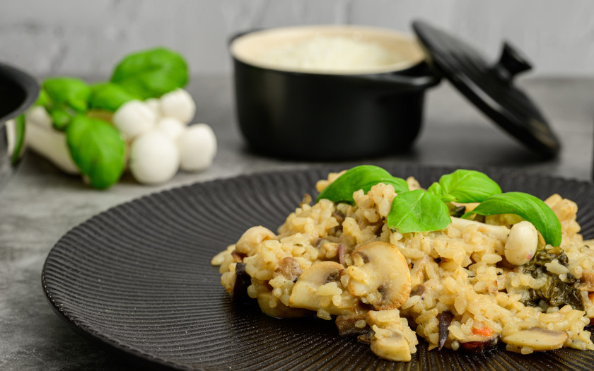

Risoto

Descrição
Um risoto simples e prático de fazer.
Ingredientes
- 2 colheres (sopa) de cebola picada
- 2 colheres (sopa) de azeite
- 30 ml de vinho branco
- 1 xícara (chá) de arroz arbório
- 3 xícaras (chá) de água fervente
- 2 tabletes de caldo de legumes
- 2 colheres (sopa) de manteiga gelada
- 50 gr de parmesão ralado grosso
- Sal a gosto
Como fazer
- Inicialmente prepare o caldo: em uma jarrinha ou leiteira, coloque as 3 xícaras de água fervente e dissolva os cubos de caldo de legumes. Reserve, mantendo aquecido.
- Refogue a cebola picada no azeite. Quando estiver translúcida, acrescente o arroz arbóreo e refogue, para que os grãos possam absorver toda a gordura.
- Acrescente o vinho branco e refogue mais um pouco. Despeje então, 1/3 do caldo reservado, abaixe o fogo e deixe cozinhar em panela sem tampa, sempre mexendo.
- Quando estiver quase seco, acrescentar a metade do caldo restante. Mexa algumas vezes, para não pegar no fundo da panela.
- Quando estiver quase seco novamente, acrescente o restante do caldo e mexa um pouco mais.
- Quando finalmente estiver quase seco novamente, retire a panela do fogo e do calor, acrescente a manteiga gelada e o parmesão.
- Mexa vigorosamente, tomando apenas o cuidado de não quebrar os grãos.
- Sirva imediatamente